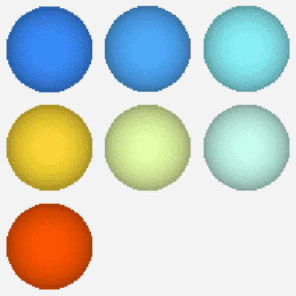

Created by figure31, 2025
FLAMING STAR, $FSTAR (ERC20)
Supply: 666,666,666,666 (3.3% AA)
Mint: Base, public, on-chain,
0.66 USDC or 4,444 $BMOON per lot of 3,333,333 $FSTAR, 100,000 lots available (50% of supply)
66% of the mint revenue and the remaining 50% of the supply will be placed in a Uniswap V4 pool. The pool will use a custom hook swap fee of 6%. Fees earned in $FSTAR are burned. USDC fees are distributed to ERC-721 (NFT) holders and the artist.
FLAMING STAR, $FSTAR (ERC721)
Supply: 33 (+6 AP)
Mint: Base, available only to $FSTAR owners, on-chain
666,666,666 $FSTAR per NFT (0.1% of supply)
Metadata: on-chain, dynamic
***
Flaming Star ($FSTAR) is a dual ERC20-ERC721 release, a larger-scale suite to Blue Moon. Similar to its predecessor, Flaming Star is an artwork deployed on multiple fronts.
The token generates colour events during mint and transfer transactions. Mints create a fixed 100,000-cell grid visible on the homepage. Transfers populate two canvases: a live 3,000-cell grid on the transfers page, and a perpetually expanding canvas on the show all tab. These transfer colour generation events can be amplified with the help of a special contract that generates 33 mathematically random addresses and sends each of them 1 $FSTAR token, all within a single transaction (see the "Transfers" page and the "Amplify" button).
Owners of $FSTAR tokens can also claim NFTs. The contract generates entirely on-chain dynamic art (base64 SVG). The artworks are 11 x 11 grids of 121 hues. The owner's address and the latest mined block are used as seeds. Every time the artworks are generated via the contract's read function, the outputs change. Owners of these NFTs receive 50% of the USDC fees from the token pool. The pool utilizes a custom hook that automatically redistributes fees to all owners when the DistributeFees function is used.
Both ERC20 and ERC721 contracts utilize the same HSL colour range, inspired by the OBAFGKM spectral types of stellar temperatures. All colours generated by the contracts are derived from seven primary hues.
***
After colours and subjectivity
Where Piet Mondrian sought to minimize subjectivity to achieve universal truth, Gerhard Richter eliminated it through randomness and proxies; Flaming Star displaces it into system architecture. Authorship moves from composition to participative system design, from making images to making image-generating systems bounded by self-referential parameters and network activity. What changes when mid-century painting's rejection of compositional intent meets the infrastructural logic of asset creation, transfer, and infinitely expanding networks?
Disinterested Participants
Flaming Star is perpetually expanding. It offers simultaneous views: a fixed grid of 100,000 mint events, another that expands with transfers, and other smaller canvases that have no fixed rendered state. Scale is no longer determined by human dimensions but by participation, while form is rendered by the latest network state.
Following Blue Moon, Flaming Star uses the blockchain as both a generative system and an infrastructure for creative participation. Once again, colour is treated as a construction material. Transactions emit color events which are then indexed and added to the grids. What appears is a constellation: individuals and their actions written in canvas-time. A history with no narrative, a landscape of logs. The eye is restless across the grids. No individual cell commands focus. Patterns emerge then diffuse into the scale of the whole. All stand as equals. Stars without gravity.
Collectors can perform both voluntary and involuntary creative acts: token creation and transfers. These are the basic primitives of distributed ledgers, which can be indexed and amplified. Still, addresses don't represent, hashes don't symbolize, gas spent doesn't underline desires, and value doesn't change meaning. Together, they draw a star map with no legend or borders, a heatmap of events that hold no meaning beyond their occurrence. All we can observe is a growing history of events.
***
1896
Annie J. Cannon, an assistant at the Harvard Observatory, defines seven star types (OBAFGKM) and their spectral temperatures.
1919
Piet Mondrian paints Composition with Grid IX. A grid of colours, contrast and empty space, meticulously arranged to create a harmonious visual experience. The neoplasticist's practice aimed to evoke abstract universal truths. The prominent use of yellow was intended to evoke a spiritual sense of light. A couple of years earlier, he wrote, "Although I was thoroughly conscious that we can never be absolutely objective, I felt that one can become less and less subjective, until the subjective no longer predominates in one's work. [...] Observing sea, sky and stars, I sought to indicate their plastic function".
1968
Elvis Presley released "Flaming Star" and starred in the movie of the same name.
1974
In the 60s, Gerhard Richter began working on the Colour Charts series, a systematic grid exploration of colour liberated from compositional intent. He collected samples of commercial paint, assigned numbers to them, placed them in a box, and drew at random. In 1974, this practice culminated in large canvases of thousands of colours. Half a century later, Benjamin H.D. Buchloh wrote about the series: "we encounter a difficult synthesis of abstraction's continuous shifting between [...] allegorical iteration and parodic repetition." A year later, Mark Godfrey added: "Richter replaces the idea of careful composition with one of randomness, as if admitting that the painter's historical role (for instance, judging color arrangements) are irrelevant, and that now a mathematical system and some studio assistants can generate a canvas instead."
***
Minting the ERC20
Set your network on Base mainnet. Connect your wallet with the button in the bottom right corner then click the mint button next to it. You must first approve the contract to spend your USDC, then you can mint at will. The minting process voluntarily requires collectors to spam the mint function and witness the growth of the collective artwork. The canvas auto-refreshes every couple of seconds to display new mints. You can highlight your mints on the canvas with the "highlight" button. Do not send USDC directly to the contract. No refunds.
Minting the ERC721
You need at least 666,666,666 $FSTAR (0.1% of the supply) to mint an NFT. Click on the view/claim NFT button. The page displays all 39 NFTs, minted or not. Scroll down to find unminted ones and click the "claim/mint" button. You will first need to approve the NFT contract to transfer your $FSTAR, then click again to mint. The page will refresh and display your newly minted asset. Do not send tokens directly to the contract. No refunds.
If you prefer not to use the frontend, you can interact with the contracts directly via BaseScan:
USDC (approve the $FSTAR contract to spend up to 1980 USDC for max mint)
$BMOON (approve the $FSTAR contract to spend up to 13,332,000 $BMOON for max mint)
$FSTAR ERC20 (use the mint write function and input either 1 or 7 for lot size)
$FSTAR ERC721 (first, approve the ERC721 contract to spend 666,666,666 $FSTAR on the ERC20 contract, second, use the mint function)
Amplifier (use the amplify function to generate 33 random transfers)
Hook (use the DistributeFees function to distribute fees to NFT holders)
$FSTAR tokens generate colours as on-chain events each time they are transferred. This page displays the last 3000 transfers. Transfers initiated by the same address within a single transaction exhibit the same hue.
You can contribute to the ever-growing collective transfers canvas by using the . It mathematically finds 33 random addresses and sends each of them 1 $FSTAR. Shooting stars in the void. Your contribution is visible through the trail it leaves, distinct from regular transfers that emit single colours.
Contract balance: checking...
Amplifications remaining: checking...